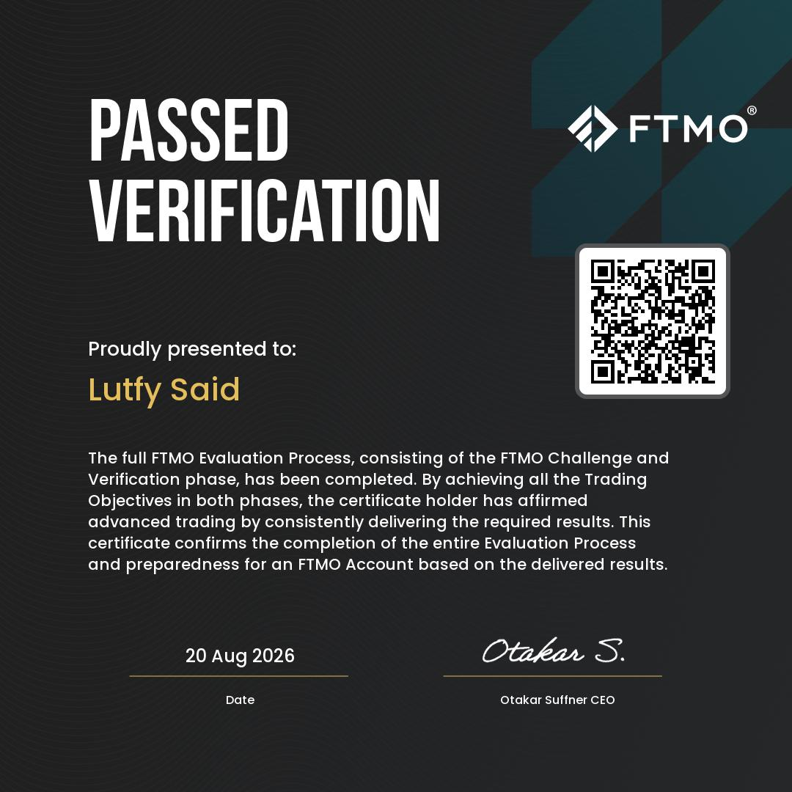

FTMO
This page is about my personal hobby and is not financial advice
FTMO is a proprietary trading firm that evaluates traders through structured challenges and, if they pass, provides them with funded accounts where they can earn a share of profits.
I've personally been interested in the financial markets when I learnt that the S&P 500 averages roughly 10% a year including dividends, since 1957.
Compared to the bank which has low risk, low reward. Compared to the SnP which in my opinion is also low risk but medium reward.
It is made up of 500 of the largest US companies companies. Although it's low risk, one must be very careful when an event can affect all companies and not individually.
For example Covid, World War 3, economic events (recession) ect.
FTMO certificate

Here is a list of my top 3 investments instruments.
- S&P 500 (Index)
- Gold and Silver (commodities)
- EUR/USD (Forex)
Trading involves significant risk, and you should only invest money you can afford to lose.